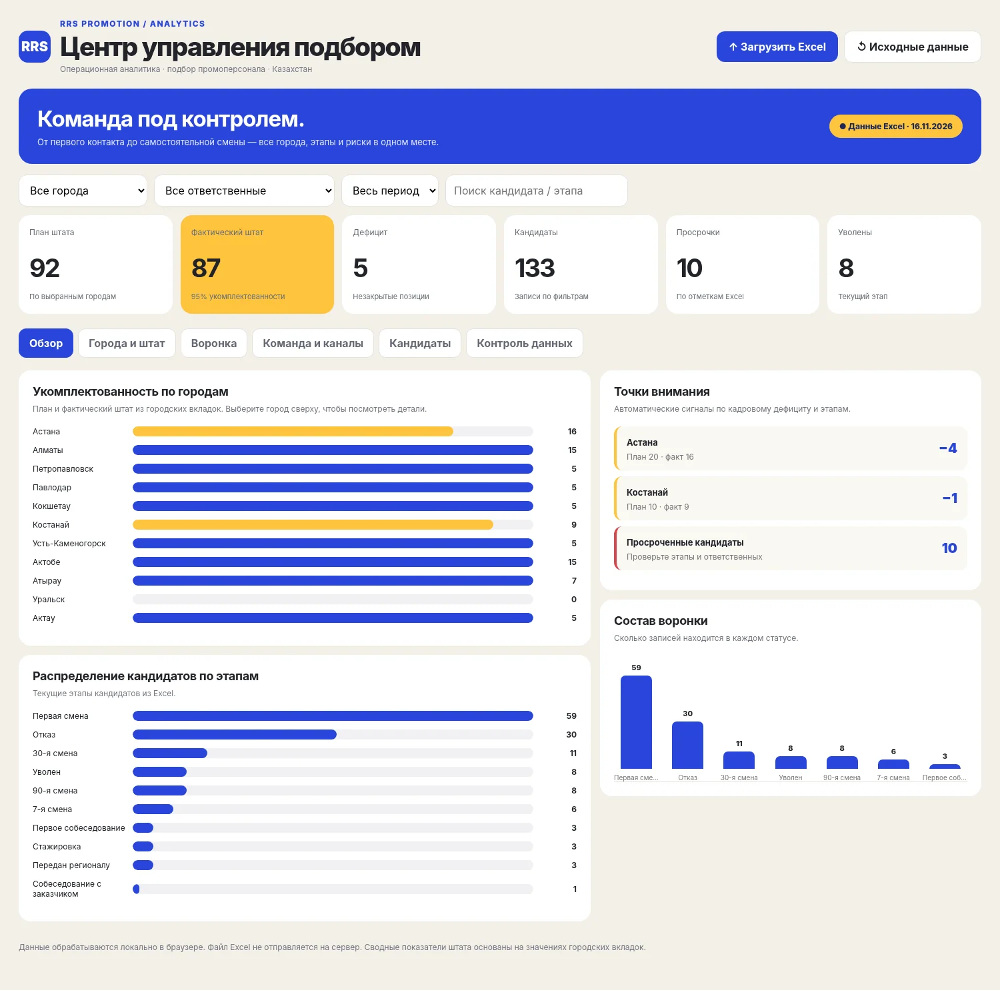
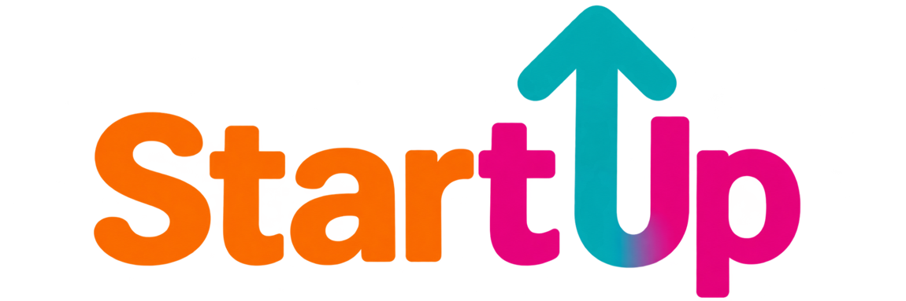
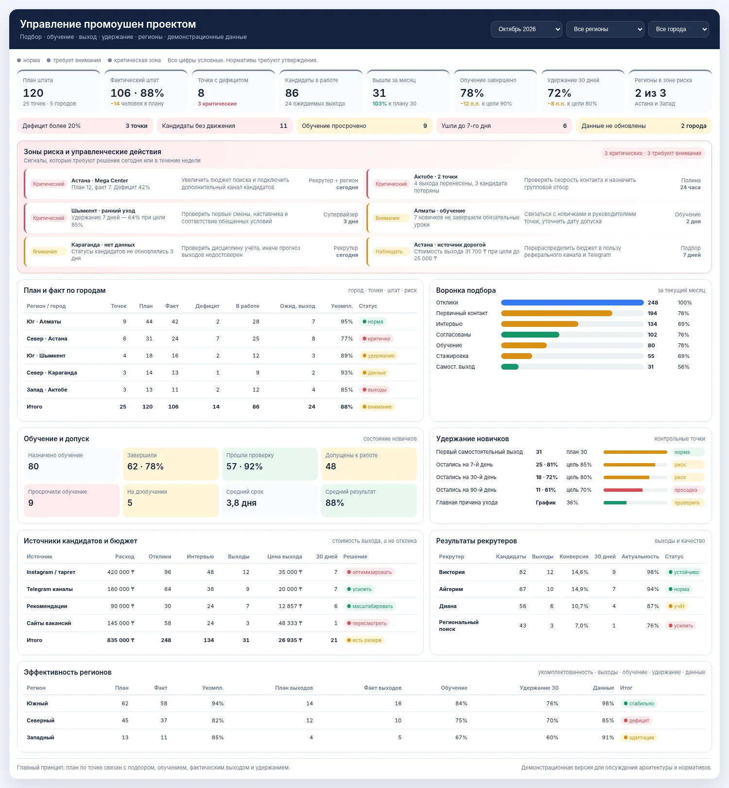

Дашборд рекрутинга
Визуализация подбора, ключевых показателей и статусов кандидатов.

От разрозненного подбора к единой системе рекрутинга, обучения и контроля промоутеров для проекта Яндекс Плюс.
Место подготовлено для будущего видеокейса StartUp
Подбор стал прозрачнее, кадровую потребность стало проще контролировать, а единый курс помог стандартизировать подготовку. Заказчик высоко оценил работу и доверил StartUp ещё один проект.
Для StartUp эта связка стала основой нового комплексного предложения: не просто предоставить персонал, а обеспечить систему подбора, контроля и обучения, которую можно масштабировать на другие проекты.
StartUp — BTL-агентство, обеспечивающее промоакции персоналом. Для проекта Яндекс Плюс требовалось быстро и стабильно набирать промоутеров в разных городах и торговых точках. Без общей системы было трудно вести кандидатов, контролировать этапы найма и оперативно замечать нехватку сотрудников.
Супервайзеры тратили время на уточнения и срочное закрытие кадровых пробелов. Обучение также зависело от того, кто проводил инструктаж: единого стандарта подготовки не было.
Усилили рекрутинговую функцию и нашли сильного рекрутера. Создали инструменты ежедневного контроля кандидатов, вакансий и потребности по городам и точкам.
Собрали данные в наглядные панели: руководитель видит дефицит персонала, этапы подбора и зоны, где требуется немедленная поддержка.
Создали курс по продукту, обязанностям, коммуникации с клиентами и работе с возражениями. Для материалов применили современные AI-инструменты.
Вместо разрозненных запросов команда получила общую картину. Супервайзеры смогли сосредоточиться на качестве работы промоутеров в точках.
Подборка реальных кадров из обучающих презентаций и практических материалов. Нажмите на изображение, чтобы рассмотреть его крупнее.
Не просто картинки: можно посмотреть увеличенный скриншот и открыть каждую рабочую HTML-демонстрацию.

Визуализация подбора, ключевых показателей и статусов кандидатов.

Сводка по городам, штатам, обучению, удержанию и зонам риска.
Примечание: второй дашборд содержит демонстрационные данные, а не фактические показатели проекта.